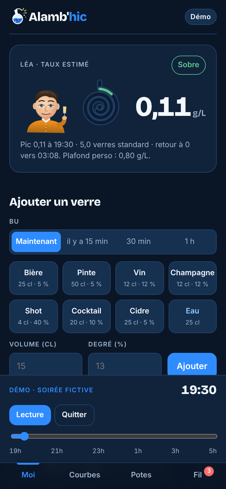
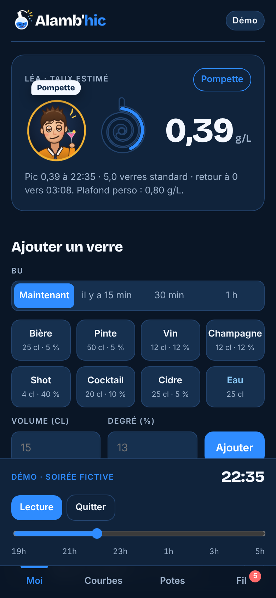

Présentation complète · 10 novembre 2026
On trinque, on se chambre,
on se surveille.
Le jeu de soirée entre amis où l'on rit du taux des autres, et où le groupe veille à ce que personne ne dépasse les bornes.
Alamb’hic · 1Le jeu de soirée entre amis où l'on rit du taux des autres, et où le groupe veille à ce que personne ne dépasse les bornes.
Alamb’hic · 1Réservé aux 18 ans et plus. Pensé pour les soirées à domicile, sans prendre la route. Le taux est une estimation, jamais une autorisation de conduire.
Alamb’hic · 2




| Famille | Titres | Effet |
|---|---|---|
| Montée | Premières bulles (0,2) · Joues roses (0,4) · Philosophe de comptoir (0,8), dernier titre à gagner en montant | +10 |
| Honte | Hors plafond · Le Naufragé (1,2) · La Fusée (+0,5 g/L en une heure) | −15 et gage sans alcool |
| Modération | Atterrissage en douceur (sous 0,2 après 0,4) · Retour sur Terre (retour à 0) | +10 |
| Hydratation | Le Chameau (3 verres d'eau) · L'Oasis (6 verres d'eau) | +10 |
| Solidarité | Sam de la soirée (zéro alcool) | +10 |
| Info | Clés confisquées (0,5 g/L) | aucun point |
Gages tirés au sort parmi huit, toujours sans alcool : verres d'eau, compliments, imitation, chanson, mime…
Alamb’hic · 6

Rougeurs, nez, paupières, sourire puis grimace, tête qui penche, clés barrées à 0,5, hoquet, lunettes, teint vert et cheveux en bataille au-delà du plafond, allongé à 1,5 g/L. Pendant 25 minutes après chaque verre, il tient le bon modèle de verre ; en redescente, un verre d'eau.
Alamb’hic · 8
L'écart avec un éthylotest peut dépasser 0,2 g/L. L'étape 3 ajoutera la saisie d'une mesure réelle et un recalibrage personnel.
Alamb’hic · 10
Validations entre les étapes : un test en vraie soirée, un test sur vos téléphones, puis une relecture juridique (RGPD, loi Évin, stores) avant toute ouverture au public.
Alamb’hic · 14| Date | Version | Contenu |
|---|---|---|
| 10/11/2026 | 0.5 | L'appli devient Alamb’hic (YouDrink déjà pris par une appli américaine) : nom, logo « potion » bleu et blanc, icônes, thème bleu de l'appli, pages légales et documentation. Les noms techniques (dépôt, Render, adresse onrender) restent « youdrink ». |
| 10/11/2026 | 0.4 | Pages publiques « Politique de confidentialité » et « Conditions d'utilisation » ; consentement explicite à la création du compte ; connexion Google active. |
| 10/11/2026 | 0.3 | Repas : saisie des repas du jour avant le premier verre, ajout d'un repas à tout moment, question « avez-vous mangé ? » aux heures des repas ; le type de repas module l'absorption et le pic. |
| 10/11/2026 | 0.2 | Onglet Documentation réservé aux admins (présentation, guide, check-list, services externes) ; en-tête compacté. |
| 10/11/2026 | 0.1 | Socle web en ligne sur Render : comptes, soirées par code en temps réel, calcul serveur des taux et des titres, avatar, mode démo, suivi 7 jours, appli installable, premières règles anti-triche. |
| 09/11/2026 | proto | Prototype jouable : calcul Widmark, titres et gages, courbes communes, notifications, avatar évolutif, mode démo avec curseur temporel ; cahier des charges. |